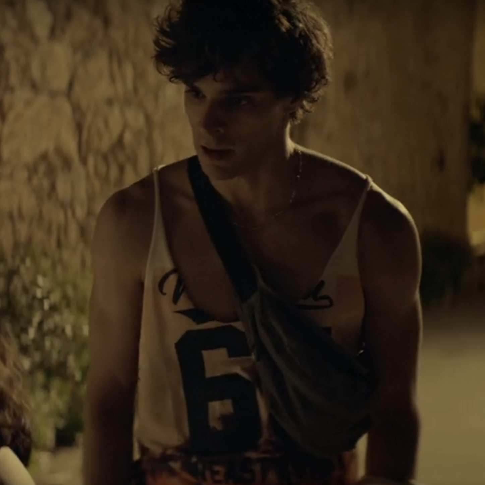

THRILLER
DRAMA
HORROR
 |
Laura Galán as Sara |
 |
Richard Holmes as Desconocido |
 |
Irene Ferreiro as Claudia |
 |
Camille Aguilar as Roci |
 |
Claudia Salas as Maca |
|  | José Pastor as Pedro |
 |
Carmen Machi as Madre de Sara |
 |
Pilar Castro as Elena |
 |
Fernando Delgado-Hierro as Juancarlitos |
 |
Chema del Barco as Juan Carlos |